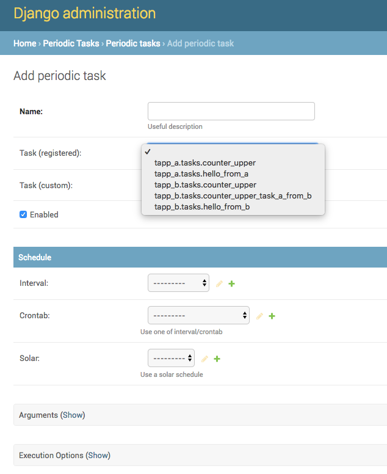
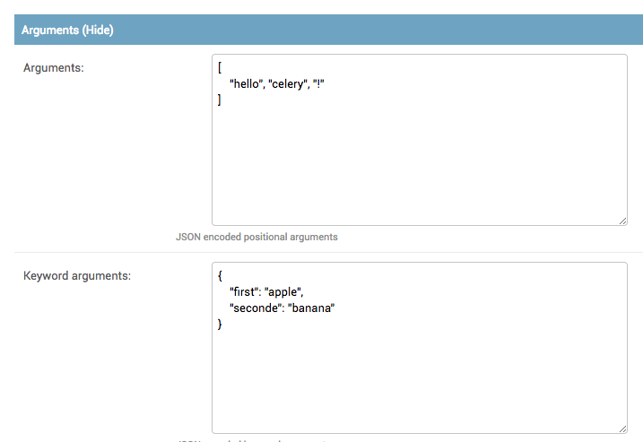

Django 2.0にCelery 4.0を導入し、WEBの管理画面でCronを管理する¶
作成日:
はじめに¶
Django 2.0に対して、Celery 4を導入してみたので、その時の知見を書く。 導入自体はそうそう難しくはなかったが、これで動く、といったサンプルコードがなかなか無かったので、 書いておきます。。
類似技術¶
類似技術で有名なものとしては
- cookpad/kuroko2: https://github.com/cookpad/kuroko2
- RUNDECK: http://rundeck.org/
がありますが、実はCeleryとDjagnoでも同じようなことができるので、Pythonやっている人は喜びましょう。
手っ取り早いのはサンプルコード をさっさと起動することです。この記事は解説に文字を割いていますので。
準備¶
本サンプルコードは以下の環境で作成した。
Django==2.0.3
django-celery-results==1.0.1
django-celery-beat==1.1.1
redis==2.10.6
requirements.txtに上記を記述し、pip install -r requirements.txtでインストールしておく。
Djangoの作成¶
1.プロジェクトの作成
django-admin startproject tm
すると次のようなツリーが作成される。
.
├── manage.py
└── tm
├── __init__.py
├── settings.py
├── urls.py
└── wsgi.py
2.Extensionの追加
tm/settings.pyに次の記述を入れます。
INSTALLED_APPS = [
'django.contrib.admin',
'django.contrib.auth',
'django.contrib.contenttypes',
'django.contrib.sessions',
'django.contrib.messages',
'django.contrib.staticfiles',
'django_celery_beat', # 追加
'django_celery_results', # 追加
]
3.celery.pyの追加
tm/以下にcelery.pyを追加する。
celeryの名前空間を汚染しているが、これであっている。
.
├── manage.py
└── tm
├── __init__.py
├── celery.py # 追加
├── settings.py
├── urls.py
└── wsgi.py
celery.pyは以下のように記述する。
from os import environ
from celery import Celery
app = Celery('tm', broker=environ.get('BROKER_URL'))
app.config_from_object('django.conf:settings', namespace='CELERY')
app.autodiscover_tasks()
これは、後々登場する@taskもしくは@shared_taskデコレータを、worker起動時に、
自動的にINSTALLED_APPSから探索する役割を果たす。
BROKER_URLは、環境変数から指定できるようにしてある。これは状況に合わせて変化して欲しい。
4.__init__.pyにappを読み込むようにする。
tm/__init__.pyにCeleryを呼び出すコード記述しておく。
from .celery import app as celery_app
__all__ = ['celery_app']
5.Migration
CeleryのプラグインはDatabaseへのMigrationを必要とします。
python3 manage.py migrate
django-celery-beatはタスクの実行スケジュール管理のために、
django-celery-resultsは実行五の結果を保存しておくためにDatabaseを利用します。
また、Adminユーザーを作成していない場合は、
python3 manage.py createsuperuser
でユーザーを作成しておきましょう。 ここまでうまくいくと、次の画像のように管理画面に、タスクのスケジュール管理の画面が出現します。 定期実行タスクの管理がここからできるようになります。

次に、タスクを追加してきます。
タスクの追加¶
アプリの追加¶
タスクの追加の前に、アプリの追加をしておきましょう。
manage.pyのあるところで、次のコマンドを叩きます。
python3 manage.py startapp tapp_a
python3 manage.py startapp tapp_b
今回はアプリ同士の相互呼び出しも検証するため、2つのアプリを追加しておきます。
INSTALLED_APPSは次のように更新しておきます。
INSTALLED_APPS = [
'django.contrib.admin',
'django.contrib.auth',
'django.contrib.contenttypes',
'django.contrib.sessions',
'django.contrib.messages',
'django.contrib.staticfiles',
'django_celery_beat',
'django_celery_results',
'tapp_a', # 追加
'tapp_b', # 追加
]
タスクの追加¶
tapp_aにシンプルなタスクを追加します。
tasks.pyというファイルを作成し、次のように記述します。
from celery import shared_task
@shared_task
def hello_from_a(*args, **kwargs):
print("Hello! From A")
print("args = {}".format(args))
print("kwargs = {}".format(kwargs))
@shared_taskを指定すると、Django Adminで認識されます。
画像ではPeriodic Tasksの管理画面中で、いくつかのタスクを追加した場合のものを表示しています。

また、登録したタスクに初期値を与えたい場合はArgumentsを利用すると可能です。

実行タイミングの指定¶
実行タイミングの指定は、Interval、Crontab、Solarの3つのうち1つのみが選択可能です。 どうしても数種類の実行方法が必要な場合は、別タスクとして登録し直します。
- Interval: 10秒ごとなど。一定間隔で行う
- Crontab: 指定した日時で実行を行う
- Solar: 指定した緯度経度に基づいた、日の出、日没などのタイミングで自動的に実行する
これはお好みで設定して下さい。
ここまで終われば、タスクの登録が完了です。
タスクの実行¶
定期実行タスクに関しては、SchedulerとWorker、BrokerをDjangoとは別のプロセスで起動させる必要があります。 サンプルコードでは、 docker-composeを用いて楽をしています。
ただ、ここはそれほど難しものではなく、起動コマンドが異なるだけとなります。 Brokerに関しては今回はredisを採用しており、自動的に立ち上がるので、ここでの説明は省きます。
scheduler, workerの起動¶
schedulerの起動コマンドは次の通りです。
DJANGO_SETTINGS_MODULE=tm.settings celery -A tm beat --scheduler django_celery_beat.schedulers:DatabaseScheduler --pidfile /celerybeat.pid
workerの起動コマンドは次のとおりです。
bash -c "DJANGO_SETTINGS_MODULE=tm.settings celery -A tm worker"
解説¶
workerについて¶
ここで重要なポイントはDJANGO_SETTINGS_MODULE=tm.settingsです。
(これを忘れるとひどく沼にはまります。)
celery -A tmはtm/__init__.pyを見に行きます。ここにcelery_appが存在しない場合はエラーとなります。
次に、celery.pyのapp.config_from_objectとapp.autodiscover_tasksにおいては、
Djangoのsettings.pyを探索しに行きます。
app.config_from_object('django.conf:settings', namespace='CELERY')
通常、DEBUGサーバーなど立ち上げる時、python3 manage.py runserverなどとしますが、
コードを見ると
os.environ.setdefault("DJANGO_SETTINGS_MODULE", "tm.settings")
が走っています。つまり、起動時に環境変数を登録しているため、Djangoを利用するceleryも環境変数、もしくは変数を 起動時に定義しておかなければなりません。
タスクの認識に関しては、
app.autodiscover_tasks()
が自動的にsettings.pyからINSTALLED_APPSを吸ってきて解決してくれるので、それぞれのAPPで
Workerを明示的に起動する必要はありません。むしろ、それを行った場合、APP間でModelを参照するといったことができなくなります。
schedulerについて¶
Schedulerの役割は至ってシンプルです。
- Databaseに登録されているタスクの監視
- 指定の時刻になった時、Brokerに対してWorkerがタスクを実行するようにメッセージを送信
1のおかげで、Django Adminでタスクを登録、編集、削除した時に自動的にスケジューリングされます。 2はBrokerへ登録されたタスクを実行するようにメッセージを投げるだけです。 実際に実行されるかどうかは保証されません。
そのスケジュールを管理するためのデータベースとして、
--scheduler django_celery_beat.schedulers:DatabaseSchedulerを指定しておきます。
未指定の場合は、コマンドの実行ディレクトリにSchedulerの管理用のファイルが作成されます。
django_celery_beat.schedulers:DatabaseSchedulerを指定してる場合は、
Djando Adminでは見えませんが、Database上にスケジュールが記述され、仮にSchedulerが落ちたとしても、
どのタスクがスケジューリングされているかは残ります。
--pidfile /celerybeat.pidとしているのは、開発上の都合といえばそのとおりです。
起動場所にpidファイルが生成されますが、Schedulerを再起動した場合に、
pidファイルが存在した場合、Schedulerの多重起動を防ぐためにSchedulerが起動しません。
コンテナを利用している場合は、良くコンテナごと落とすため、これは不便なため、マウントされていなコンテナのディレクトリにpidファイルを投げています。
実際に運用するときは、Schedulerのコンテナのサイズを1のままにしておくのが普通かと思います。
どうしてもSchedulerを冗長化するために複数のコンテナを利用する場合は、各コンテナに永続ボリュームをマウントして、pidファイルが
一意になるように設定しておくこともできますが....
おわりに¶
ここまでで、タスクのスケジューリング実行が可能となります。 長くなってしまいそうなので、説明はここまでにしますが、サンプルコード ではもうちょっとサンプルを追加しています。興味がある人はぜひご覧ください。
参考